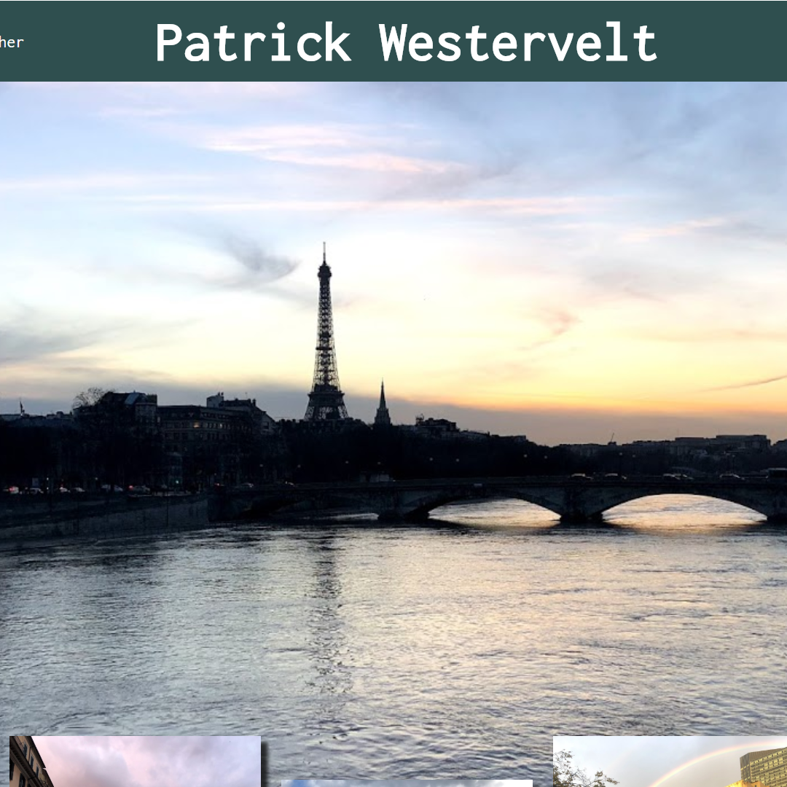
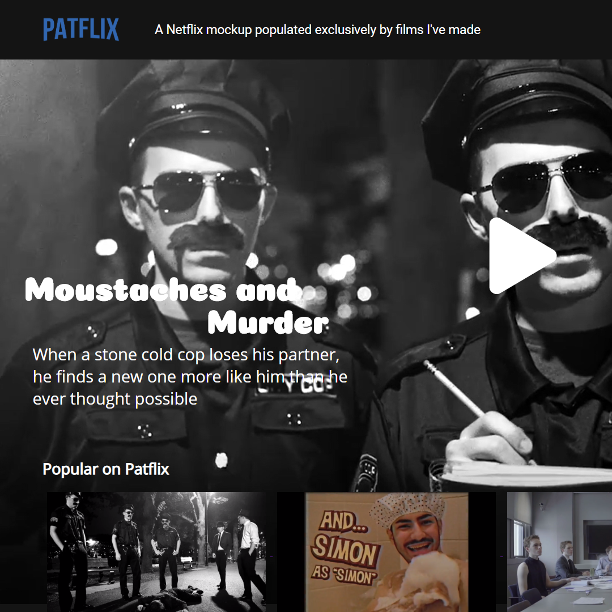
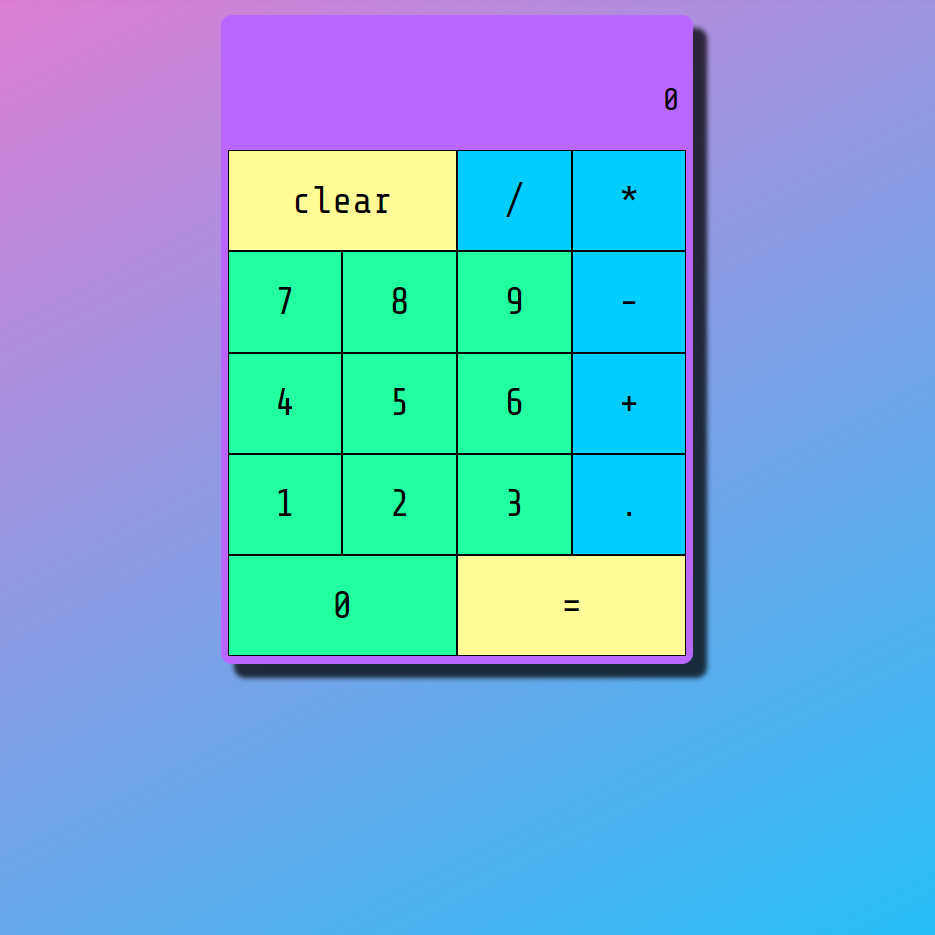

My name is Patrick, and I really love technology, and I really love art. So often, to me, it feels like the world tries to put those things at some kind of opposition to each other; do you like art, or do you like math and science? Well, what if I like both? Because I do. I love making films with my friends, and I love cracking a difficult problem. The thing I love most, though, is when I get to combine technological problem solving with art, and there are few mediums that combine the both quite like web development. And I love it.
Sept. 2016-Current
Visual Media Arts Major
At Emerson College, I study web development, film, and graphic design, with a current GPA of 3.9 and as a member of the Golden Key Society, an Emerson organization open to students in the top 5% of their class as a junior.
At Emerson College, I've had the oppurtunity to work with Professor Ruth Grossman on research that attempts to understand differences between neurotypical and autistic children, writing simple computer programs to organize and process data, editing videos, and working with motion capture data.
I've worked as a peer tutor at Emerson college, tutoring for a variety of classes and topics such as HTML and CSS, AutoDesk Maya, and screenwriting, helping other students create projects, understand core concepts, and understand typical workflows.
A sample landing page, a static page emulating a simple welcome and portfolio, as you'd find on many company's websites.

This website showcases full CRUD capabilities, a simple, responsive replication of a popular streaming service's website, and some of the films I have made with my friends over the years. Made with HTML, CSS, Javascript, EJS, Express, Mongo, and AtlasDB.

Five projects made with pure HTML, CSS and React, performing simple tasks and demonstrating knowledge of JS frameworks, API calls, keyboard inputs, and more. Consists of a calculator, a drum kit, a Pomodoro Clock, a random Pokedex Generator, and a markdown previewer.
